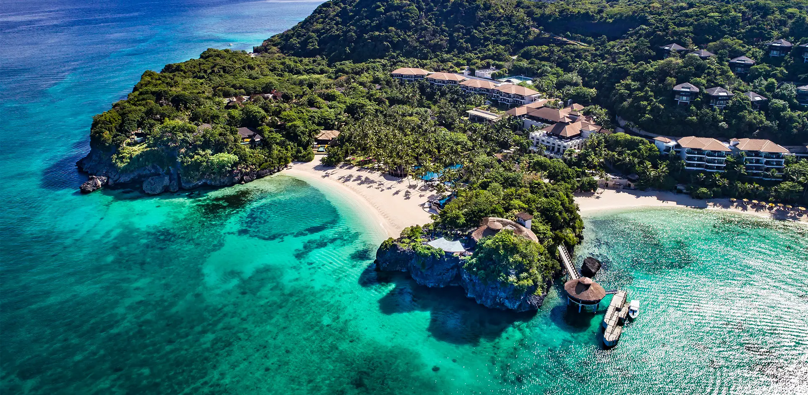
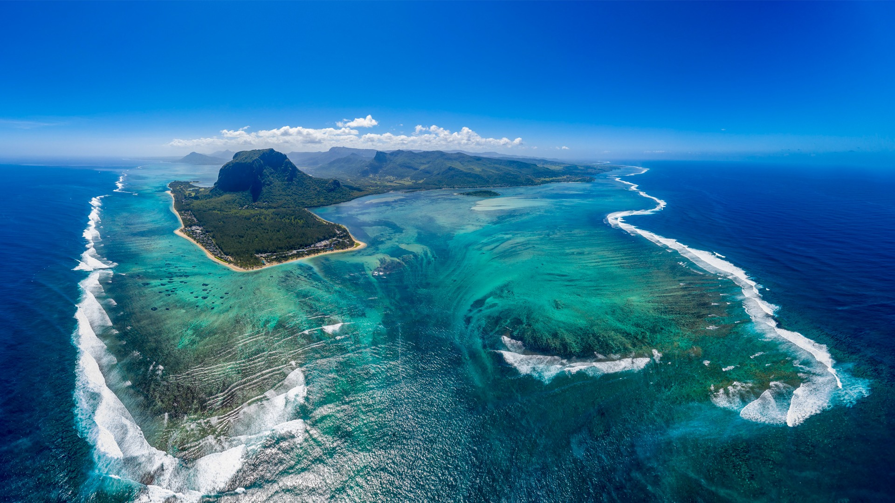

"BEST BEACHES IN THE WORLD"
"BAHAMAS"The Bahamas is renowned for its stunning beaches,
and for good reason. From the famous
Cable Beach in Nassau to
the secluded shores of Exuma,
you'll find a beach to suit every taste.
The postcard-perfect white
sands and crystal-clear water are an ideal
setting for relaxation, water sports,
or simply soaking up the sun.

Boracay, one of the top
Islands in the Philippines,
is popular for its beaches and blessed with a long
stretch of powdery white sand,
crystal clear and azure waters,
and a stunning sunset.
Boracay is the most iconic
island in the Philipines and has
won multiple awards in previous years.
"BORACAY"Boracay, one of the top
Islands in the Philippines,
is popular for its beaches and blessed with a long
stretch of powdery white sand,
crystal clear and azure waters,
and a stunning sunset.
Boracay is the most iconic
island in the Philipines and has
won multiple awards in previous years.
"FIJI"Fiji is popularly known for
its attractive pacific islands,
such as the larger Vanua Levu and Viti
Levu islands. Moreover,
the people of Fiji are
among the warmest, friendliest,
and most welcoming in the world.
This is because the Fijian
culture emphasises friendship in various aspects.

"MALDIVES"Maldives is world-famous for its wide
spectrum of marine life, and one
of the best ways to explore it is by
snorkelling or scuba diving. The activities
allow you to swim freely in the
Indian Ocean to explore the colourful
arrays of corals, reef sharks, sea turtles,
stingrays, and others.

Mauritius is renowned for its breathtaking beaches
like Belle Mare, Flic-en-Flac, and Trou aux Biches,
offering an idyllic setting for relaxation
and water sports. Cultural Fusion: Mauritius is
a melting pot of cultures with influences
from Indian, African, Chinese,
and European tradition.
"MAURITIUS"Mauritius is renowned for its breathtaking beaches
like Belle Mare, Flic-en-Flac, and Trou aux Biches,
offering an idyllic setting for relaxation
and water sports. Cultural Fusion: Mauritius is
a melting pot of cultures with influences
from Indian, African, Chinese,
and European tradition.
"WHITSAND BAY"Whitsand Bay is a popular dive
site, home to HMS Scylla,
an ex-naval frigate sunk in 2004 to form an
artificial reef. Since then it's been
used for scientific studies of
marine life, and is currently
home to over 270 species.